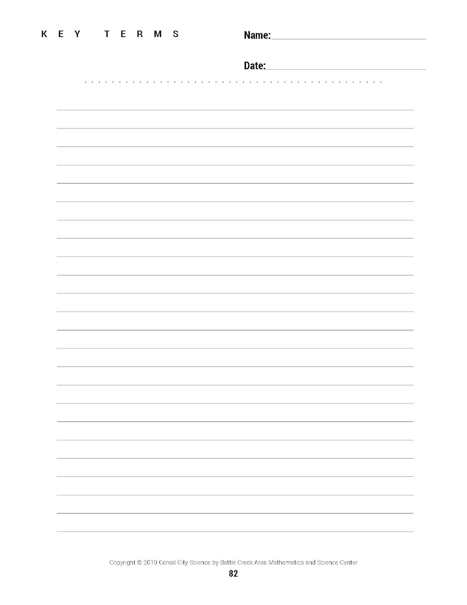
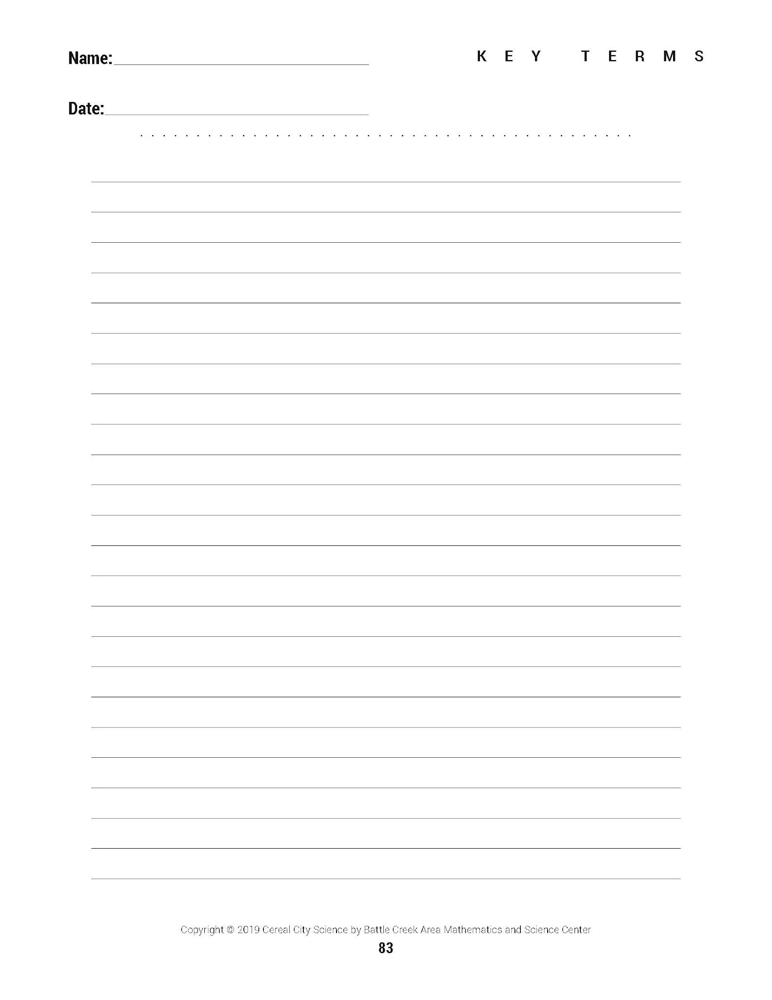
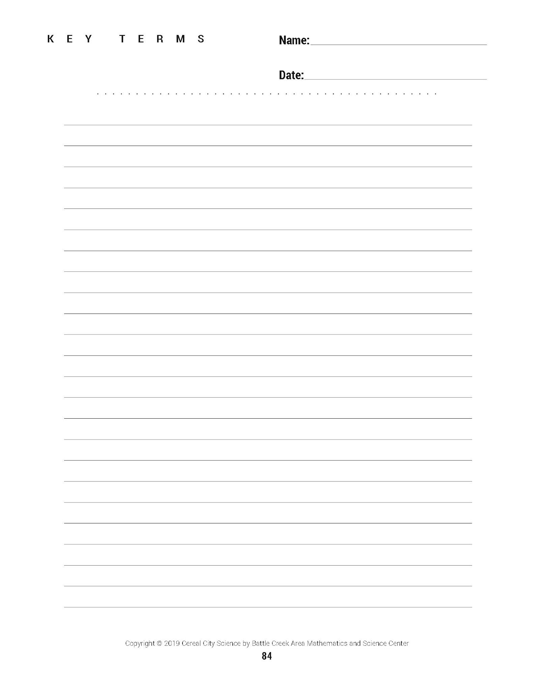

Key terms • Key TermsJournal page 82 of 84
Name: ______________________________Date: _______________
Compare with original journal page 82
This is the unmarked scanned page for checking original diagrams, exact wording, or layout. The editable HTML content is above.

Key terms • Key TermsJournal page 83 of 84
Name: ______________________________Date: _______________
Compare with original journal page 83
This is the unmarked scanned page for checking original diagrams, exact wording, or layout. The editable HTML content is above.

Key terms • Key TermsJournal page 84 of 84
Name: ______________________________Date: _______________
Compare with original journal page 84
This is the unmarked scanned page for checking original diagrams, exact wording, or layout. The editable HTML content is above.
